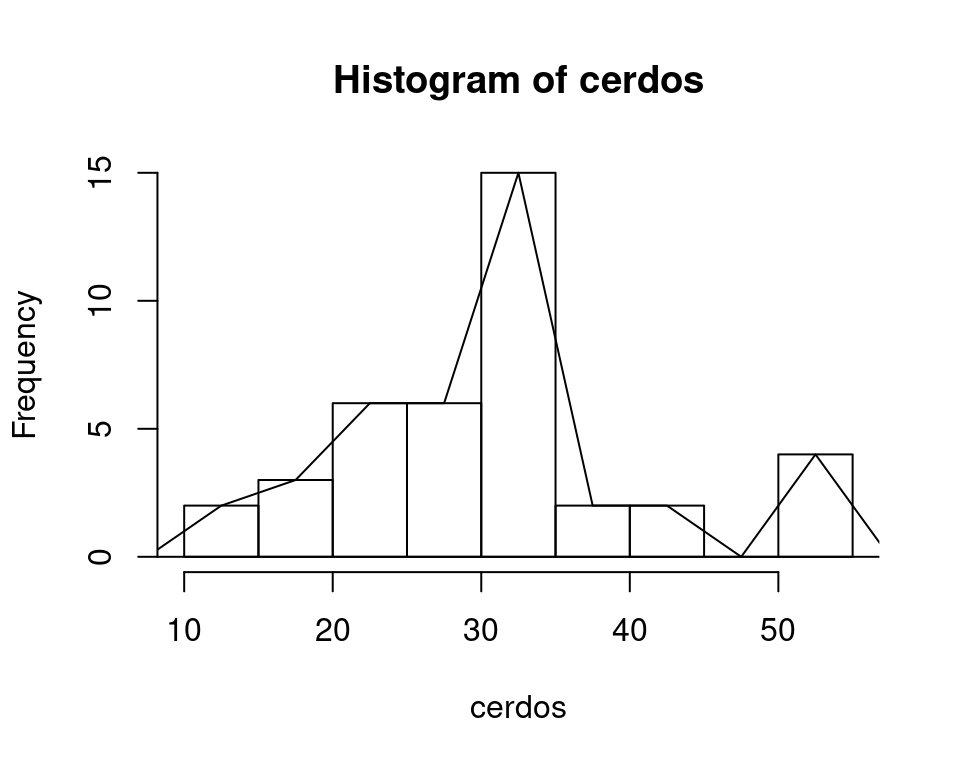

Capítulo 5 Guía 2 - Variables aleatorias
5.1 Ejercicio 1
Clasificar las siguientes variables de acuerdo a su tipo (cualitativas, cuantitativas discretas o cuantitativas continuas) e identificar las escalas de medición (nominal, ordinal, de intervalo, razón o proporción) en cada caso:
- Número de ventas por producto en una fábrica de aberturas de aluminio.
- Diferentes tipos de empresas según clasificación por tamaño (pequeñas, medianas y grandes empresas).
- Altura de arboles de Eucaliptus grandis en ensayos de 10 años de implantados.
- Clasificación de la leche según los diferentes lotes de la Estación Experimental INTA Reconquista.
- Número de terneros nacidos en establecimientos agropecuarios de la provincia de Corrientes en un año.
- Producción mensual en Tn, a lo largo de un año, de una planta procesada de arroz.
- Cantidad de empleados de las distintas sucursales del supermercado Impulso.
- Consumo eléctrico por mes de una fábrica (Kw/hora).
- Número de operaciones aéreas en un aeropuerto según los días de la semana.
- Temperatura de los distintos procesos en una fábrica de embutidos.
5.2 Ejercicio 2
Se registró el lugar de procedencia, según departamento, de 40 empleados de la Dirección Provincial de Energía de Corrientes. Los datos son los siguientes:
| f1 | Ituzaingo | Beron de Astrada | Goya | Capital | Mercedes |
| f2 | Mercedes | Santo Tome | Beron de Astrada | San Cosme | Ituzaingo |
| f3 | Capital | Capital | Capital | Mercedes | Mercedes |
| f4 | Capital | Curuzu Cuatia | Mercedes | Capital | Curuzu Cuatia |
| f5 | San Cosme | Itati | Alvear | Capital | Alvear |
| f6 | Ituzaingo | Esquina | Capital | Itati | Goya |
| f7 | Itati | Capital | Goya | Goya | Capital |
| f8 | Curuzu Cuatia | Mercedes | Goya | Esquina | Ituzaingo |
- Construir una tabla de frecuencias absoluta y redactar 3 (tres) oraciones con lo más relevante que pueda observar.
En primer lugar vamos a limpiar el entorno de R
Ingreso la base de datos
empleados<-c("ituzaingo", "beron_de_astrada", "goya", "capital", "mercedes",
"mercedes", "santo_tome", "beron_de_astrada", "san_cosme", "ituzaingo",
"capital", "capital", "capital", "mercedes", "mercedes",
"capital", "curuzu_cuatia", "mercedes", "capital", "curuzu_cuatia",
"santo_tome", "itati", "alvear", "capital", "alvear",
"curuzu_cuatia", "mercedes", "goya", "esquina", "ituzaingo",
"ituzaingo", "esquina", "capital", "itati", "goya",
"itati", "capital", "goya", "goya", "capital")Creo una tabla de frecuencias absolutas con la función table()
- Realizar una tabla de frecuencias relativas con función
prop.table()
La función prop.table() recibe como argumento una tabla de frecuencias absolutas, por eso guardo esa información en un objeto de R, para proceder de manera ordenada y correcta
- Realizar un gráfico de barras con la distribución por departamento.
El argumento las=2, me permite visualizar de manera correcta los nombres de los departamentos de Corrientes.
5.2.1 Práctica en R
- Para ingresar en R, cree un vector de caracteres con estos datos.
- Para crear una tabla de frecuencias absolutas, use la función table().
- Para crear una tabla de frecuencias relativas, use la función prop.table().
- Para realizar un gráfico de barras, use la función barplot().
5.2.2 IMPORTANTE
Escriba los nombres en minúscula, sin espacio y sin tilde, para evitar errores innecesarios. Ejemplo: “Berón de Astrada” lo escribo beron_de_astrada, o beron-de-astrada, separada por guiones, en vez de espacios.
5.3 Ejercicio 3
Las ganancias de peso en Kg de 40 cerdos en 60 días fueron:
| f1 | 30.2 | 17.6 | 34.3 | 30.6 | 33.4 | 31.6 | 52.1 | 21.8 | 30.1 | 36.7 |
| f2 | 33.3 | 53.1 | 11.5 | 21.5 | 32.4 | 40.1 | 53.4 | 40.9 | 33.2 | 32.7 |
| f3 | 29.0 | 15.2 | 12.2 | 27.3 | 29.5 | 33.6 | 32.3 | 25.5 | 19.7 | 33.4 |
| f4 | 20.5 | 22.8 | 50.9 | 36.1 | 30.5 | 28.2 | 20.3 | 21.6 | 34.3 | 25.5 |
- Confeccione una tabla de frecuencias absoluta e interprete los resultados.
Mediante la función c(), para crear un vector de valores numéricos en R.
cerdos<-c(30.2, 17.6, 34.3, 30.6, 33.4, 31.6, 52.1, 21.8, 30.1, 36.7,
33.3, 53.1, 11.5, 21.5, 32.4, 40.1, 53.4, 40.9, 33.2, 32.7,
29.0, 15.2, 12.2, 27.3, 29.5, 33.6, 32.6, 25.5, 19.7, 33.4,
20.5, 22.8, 50.9, 36.1, 30.5, 28.2, 20.3, 21.6, 34.3, 25.5)Tabla de frecuencias
- Realice una tabla de frecuencias relativas.
A continuación se presentan el histograma, polígono de frecuencias y ojiva correspondientes a la tabla de distribuciones de frecuencias
library(agricolae) #cargo la librería agricolae
hist_cerdos<-hist(cerdos) #realizo un histograma
polygon.freq(hist_cerdos) #realizo un polígono de frecuencias

## x RCF
## 1 10 0.000
## 2 15 0.050
## 3 20 0.125
## 4 25 0.275
## 5 30 0.425
## 6 35 0.800
## 7 40 0.850
## 8 45 0.900
## 9 50 0.900
## 10 55 1.000
## 11 60 1.000Para cada ítem seleccionar el gráfico que corresponda e indicar
- El porcentaje de cerdos que ganó, como máximo, 45 kg.
- El porcentaje de cerdos que ganó en promedio 24.07 kg.
- Los pesos promedio más y menos frecuentes.
5.3.1 Práctica en R
- Para ingresar estos datos en R, cree un vector numérico con estos datos.
- Para crear una tabla de frecuencias absolutas, use la función table().
- Para crear una tabla de frecuencias relativas, use la función prop.table().
- Para realizar un histograma, use la función hist().
- Para realizar un polígono de frecuencias, haga uso de la librería agricolae.
- Para realizar un gráfico de ojiva, haga uso de la librería agricolae.